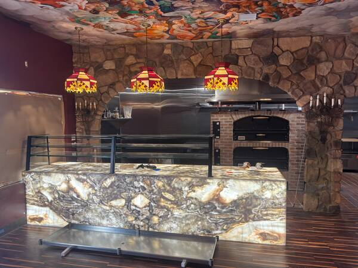

Custom Stonework — Artificial Rock, Veneer & Carved Finishes in San Diego
Natural-looking artificial rock faces, stone veneers, carved monograms and architectural details — all designed and installed by our in-house stonework crew. No subcontractors, no shortcuts, no compromises.

Natural stone look. Custom crafted.
From artificial rock retaining walls and landscape features to carved stone entries and interior accent walls, we design and install stonework that transforms your San Diego property. Every piece hand-finished for quality and durability.
Artificial Rock Faces
Hand-cast faux stone designed to look like natural granite, slate, and fieldstone. Lightweight, durable, and colored to match San Diego's landscape aesthetic.
Stone Veneers
Natural and artificial stone veneers for exterior walls, fireplaces, water features, and landscape borders — installed with proper flashing and sealing.
Carved Stone Details
Custom carved monograms, family names, architectural motifs, and decorative details hand-carved into stone for entries, columns, and landscape features.
Stone Recoloring
Restore faded artificial stone or change the color entirely with professional recoloring and sealing — breathes new life into aging stonework.
Retaining Walls
Engineered artificial stone retaining walls for hillside properties and landscape grading — code-compliant, built to last.
Explore Retaining Walls →Interior Accent Walls
Faux stone interior accent walls and feature walls that add warmth and character to living rooms, dens, and bedrooms without the weight of real stone.
Premium stone craftsmanship, without the premium price.
We've been crafting stonework for San Diego's most discerning homeowners since 1993. Every stone piece is designed, finished, and installed by people who know the San Diego climate and can make stone look natural and last.
In-house design & installation
We design the stonework with you on site, then hand-craft and install every piece. One crew, one standard, one point of contact from concept to completion.
Costs less than natural stone
Quality artificial stone delivers the natural stone look for significantly less — both material and installation cost. Lighter weight also means lower labor on hillside builds.
Built for San Diego's climate
Coastal salt air, UV exposure, seasonal moisture — we understand San Diego weather and select materials and sealers that stand up to it.
Lighter than real stone
Artificial stone weighs a fraction of natural stone, making it ideal for structural applications, hillside properties, and interior accent walls that real stone would overload.
Transform your San Diego home with custom stonework.
Schedule a free on-site consultation with our stonework crew. We'll review your ideas, show you samples, and quote your project — no pressure, no obligation.
What San Diego homeowners ask before we start carving.
Built to last. Designed to impress.
From outdoor living spaces and stamped concrete to retaining walls and custom stonework — every project built by our crew, start to finish.
View Recent ProjectsLet's design your San Diego custom stonework.
No sales pitch. No pressure. A free on-site assessment and quote — that's it.
Fast response from our local San Diego stonework team — North County, Coastal, Inland, South Bay and everywhere in between.